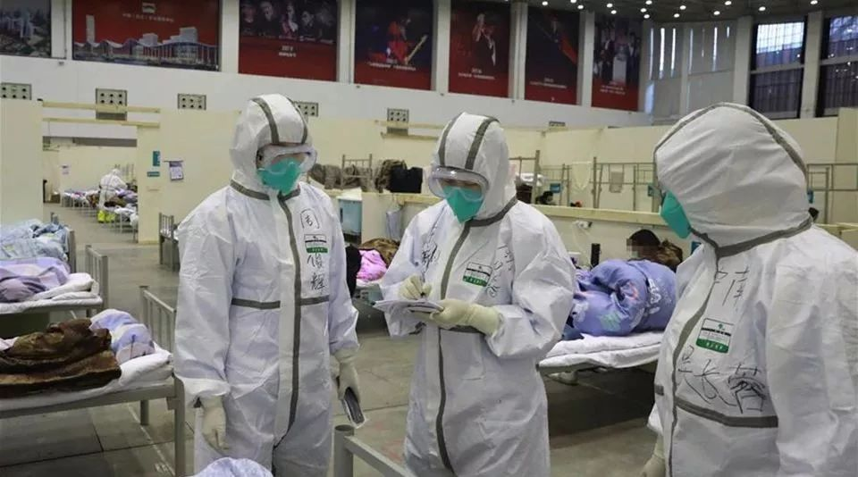

1人致三国11人感染，英国疑似“超级传播者”有何特点？
原文链接 备份链接 英国“三号患者”史蒂夫·沃尔什 图片来源：Servomex 记者：潘金花 “ 周二，英国疑似“超级传播者”沃尔什发表声明说，自己已经完全康复。他感谢了朋友、家人与同事，也希望媒体能够尊重他们的隐私。 ” 上周四，英国确 …


*************▲*************2月8日，医务人员在武汉客厅方舱医院查房。（新华社/图）
全文共4994字，阅读大约需要10分钟。
进一步摸排发现，宝山的3例病例曾经去过安徽蚌埠参加婚礼，其间曾经多次到某健身房进行健身活动——发现高度怀疑线索。印证则来自安徽蚌埠召开的新闻发布会：蚌埠龙子湖区国祯广场元素健身房有确诊患者，而此前在此健身的人士中，6人有从武汉返家记录。
2月8日凌晨三点，淮安区委书记在公开信中向全区人民喊话，“如果您去过‘浅深’浴室，恳请您说出来。”并称这些不隐瞒的人是英雄。他还号召大家举报相关人员线索，一经查实可获得200元奖励。淮安当地市民将王某、陶某戏称为“大小毒王”，把他们的行动轨迹、传染案例画成关系图。
孙晓冬一直在劝说政府接受客观事实：流调是一个循序渐进的过程，并非一开始就能搞清所有的情况，即便流调到最后，也未必能真正把问题都搞清。
本文由南方周末独家授权腾讯平台，任何第三方未经授权不得转载
文 | 南方周末记者 崔慧莹 杨凯奇
南方周末实习生 宋炳晨
责任编辑 | 汪韬
如果早知道15秒买个菜，都能被新冠肺炎病毒“命中”，56岁的宁波男子秦子毅，怕是一秒钟都不会在宁波市双东坊菜场内停留。
视频监控显示，2020年1月23日7:47，秦子毅和另一位61岁女性患者在同一摊位前共同驻留，时间只有15秒，但距离很近，两人均未佩戴口罩。
“只能说有可能是这15秒传上的。”2月7日，宁波市江北区疾控中心流调组组长周楠告诉南方周末记者。就现有流行病学调查（简称流调）来看，这是秦子毅最有可能的一次与病毒的“亲密接触”。
此次新冠肺炎疫情中，天津是最早公布详细流调过程的城市之一，其对宝坻百货大楼出现的聚集性病例，进行了抽丝剥茧的推理分析；江苏淮安浅深洗浴中心有5位顾客确诊，当地政府深夜急寻顾客与搓澡工；上海市病毒“追凶”甚至跨省追到了安徽蚌埠的健身房。
福尔摩斯般的探案者，是一群的“病毒捕手”。他们跟踪病毒，关切每一例病患因何患病；与病毒赛跑，找到密切接触人群尽早隔离观察；回溯病毒来源，在病例间探寻联系，直至找出最初感染的“零号病人”和释放病毒的潘多拉魔盒。
在人类对抗传染性疾病的历史上，流行病学调查第一次大放异彩是在1854年的伦敦。英国医生约翰·斯诺详细调查霍乱暴发的地点和死亡病例后发现，几乎所有死亡病例都饮用过一口水井的水。关闭水井，这场酿成616人死亡的霍乱很快告终。
鲜为人知的是，虽有诸多高科技手段加持，如今流调队员的工作仍普遍以传统的询问方式进行。线索繁杂琐碎，患者隐瞒或回忆不全；监控录像保存时间太短、数据信息共享不足；部分地区疫情严重人手不足，防护不足有暴露风险……他们要面对一系列难关。
“追凶”固然精彩，但在庞大而专业的疾病防控系统中，流行病学调查只是承担疾病监测功能的一个环节、一小部分。昆山杜克大学全球健康研究中心主任汤胜蓝告诉南方周末记者，要复盘此次疫情防控的得与失，仍需要从整个医疗、疾控体系上找到症结。
1
跟公安做笔录、记者做采访类似，流调的第一步工作是：问。
14天内到过哪些地方？每一天的移动轨迹是什么？乘坐了哪些公共交通工具？接触了哪些人员？去过哪个医疗机构就诊？
上海市疾控中心副主任孙晓冬告诉南方周末记者，问完一个疑似病例的情况，至少要两个小时。如果疑似转为确诊，还要补充完善信息，最多达10个小时。有时可能要重复五六次以后，才能把故事基本说圆。
在上海，黄浦区1月26日发现的2例患者是个“悬案”：没有湖北旅行史、可疑人员的接触史，也没有食用过野生动物，查不出感染来源。直到1月29日，宝山区出现3例确诊患者，才发现他们之间的病毒传播可能因为一次聚餐。
“一开始黄浦区的患者并没有想起有过聚餐，直到发现宝山的确诊病例，黄浦区患者才告诉流调队员这条线索。”孙晓冬说，“流调人员会用各种提问方式，不断地去提示、引导，帮助对方回忆，但人的记忆差别太大，有不少信息存在误差。”
流病调查费时，对密接人群和部分疑似病例，需流调人员进入隔离区进行面对面交流；已进入负压病房的确诊病例，通常以电话、视频连线来进行调查。
调查费时之外，要求却又很紧。高度疑似病例在完成问询、咽拭子采样送检等程序后，关于他/她的流调报告要在24小时内完成。这些来自疫区最深处的“一手素材”，将为各相关部门在医治、消毒、管控、预防、处置等工作环节提供参考。
不只是记不清，有的患者甚至故意隐瞒行踪。山东潍坊的确诊患者张某芳就因为刻意隐瞒自己的旅行史和接触史，导致包括68名医护人员在内的117人被隔离，有15人确诊。面对这一情况，由于流调人员没有执法权，只能帮助患者舒缓压力，引导他们自己说出来。“我们要有足够的耐心。”孙晓冬说。
张某芳康复出院后，随即因涉嫌以危险方法危害公共安全罪移交公安机关。而类似隐瞒病情的行为，据南方周末记者粗略统计，有媒体报道的已有上百起。
2
建立起黄浦区和宝山区的患者关系后，这5个病例依然是个悬案：找不到传染源，5位患者都没有湖北旅行史、湖北人接触史。
进一步摸排发现，宝山的3例病例曾经去过安徽蚌埠参加婚礼，其间曾经多次到某健身房进行健身活动——发现高度怀疑线索。
印证则来自安徽蚌埠召开的新闻发布会：蚌埠龙子湖区国祯广场元素健身房有确诊患者，而此前在此健身的人士中，6人有从武汉返家记录。
孙晓冬介绍，长三角地区有一套联防联控机制，用于密切接触者的互相协查追踪。但这一案例并没有用到，“安徽方面尚未追踪到健身房病例的密切接触者来了上海，还没给我们发协查函。”
如果不是蚌埠市的公开信息具体到了一家健身房，上海疾控人员恐仍将对该案的病毒源头一筹莫展，在大量冗杂信息中迷茫一段时间。
宁波15秒接触即感染的案例，此前也是悬案。
在发病前的14天内，患者秦子毅没有疫区旅行史，没接触过野生动物，病发前主要在江北地区活动，与辖区内已确诊患者不相识……
“撒网式”询问，并未获得有效线索。直到公安机关通过比对公共视频后发现，该男性患者在买菜时与一路人（目前已知为确诊患者）在同一摊位有过短暂（约15秒）的近距离共同驻留。“15秒的接触不是流调组最先发现的，是公安机关通过视频和病例的行踪轨迹追踪才发现的。”周楠告诉南方周末记者。
15秒的关键线索，让秦子毅从一座“孤岛”，变成了整张病毒传播树状图里的一根枝蔓。
他在菜摊前偶然遇到的路人，是一名61岁女性确诊患者陈澜，1月19日上午10：00，她搭上了一辆旅行大巴车，参加香客们自行组织赴宁波天童寺的祈福活动。
她并不知道同车的乘客胡某，在这一天已经开始感到畏寒、发热，尚未及时就诊。截至2月2日24时，与此次祈福活动相关的感染者已有25人，其中14人是同一辆大巴车上的乘客。
流调结果显示，所有劳师动众的追溯极可能要归结于：1月17日晚胡某参加了宁波海曙区一美容养生会所老板组织的聚餐，聚餐中有去过武汉的人。
3
就当前情况来看，各地的流行病学调查紧锣密鼓，但仍有不少“悬案”。
“这个健身房里面发现了5个病例，宝山的病例是哪一天，跟这些病例有什么样的接触？”孙晓冬坦率地说，“说不清楚，全国各地都一样，就像天津宝坻百货大楼，也还有很多未知。”
上海交通大学-耶鲁大学卫生政策联合研究中心执行主任赵大海告诉南方周末记者，当前疫情紧急，流行病学调查工作的重点已经不仅仅是溯源，还要找到疑似病例隔离。
天津宝坻百货大楼已发现39例确诊，14000人被隔离排查。宁波辖下宁海、镇海两地政府发布公告，寻找那起祈福活动的参与者，376人被隔离观察。
在江苏淮安，因浅深浴室引发的追踪和隔离已经是全民参与。
49岁的江苏淮安市民王某，这位常年在武汉工作的男士回到淮安后，病发前多次到淮安区浅深浴室洗浴、过夜，与他一起洗浴的陶某，以及39岁的一名搓澡工均被传染。
截至2月11日，与浅深浴室相关联的确诊病例已有15人，占淮安确诊总数的三分之一。确诊前，陶某在市内的踪迹遍布希尔顿浴场、布丁酒店、天竺宾馆和五个居民小区。还有当地市民将王某、陶某戏称为“大小毒王”，把他们的行动轨迹、传染案例画成关系图。
2月8日凌晨三点，淮安区委书记在公开信中向全区人民喊话，“如果您去过‘浅深’，恳请您说出来。”并称这些不隐瞒的人是英雄。他还号召大家举报相关人员线索，一经查实可获得200元奖励。
在淮安以外，其他城市也发现多名确诊病例曾去过淮安。淮安周边的几个城市，还将淮安“苏H”号牌车辆作为进城重点核查的对象。有网友调侃“不知深浅入浅深，一入浅深误终身”。
从几百列高铁动车组、飞机航班等交通工具到浴池、健身房，各地政府陆续“喊话”密切接触者接受隔离。
4
在流行病学调查中，“零号病人”又被称为“初始病例”或“标识病例”，指的是第一个感染某种传染病，并开始散播病毒的病人。理论上来讲，完美的流行病学调查可以追溯到零号病人，将病患串联成一个源头或多个源头的传播网络。
当流行病学调查结果最终如案件卷宗呈现出来时，公众会表示惊讶和敬意。但在面对一种突发且人们知之甚少的新发传染病时，早期流行病学调查结论需要不断被验证或纠偏。
“个案需要验证，15秒到底能不能感染上，需要进行动物试验，或更细致地分析视频里两个病例到底是如何接触，通过什么样的途径。”孙晓冬提出一串疑问。
与公众一样，孙晓冬发现一些政府官员有时会过度依赖流行病学调查结果，觉得“把（确诊病例的活动）轨迹一公布，把信息一查，把这个人一锁定，什么东西就都能够搞明白了”，他一直在劝说政府官员接受客观事实：流调是一个循序渐进的过程，并非一开始就能搞清所有的情况，即便流调到最后，也未必能真正把问题都搞清。
每次信息公开看似破了案，其实流调人员依然战战兢兢，一些“反转”新闻好像“打了脸”，实际是流行病学调查不断深入后出现的新发现。
2月9日，晋中市卫健委官网发布了一起确诊病例的生活轨迹：65岁的新冠肺炎患者王某花从2019年12月25日离开武汉，到2月5日确诊，前后一共42天。媒体敏锐捕捉到了这一信息，并很快成为公众关注的焦点——新冠肺炎的潜伏期可能长达42天之久吗？
关键词“42天潜伏期”敲在人们心上，加重了公众对开工日期延长、防控措施升级的焦虑。
没想到，两天后更新的信息让公众悬着的心落了地。原来，该患者的儿媳妇已于1月25日确诊，经平遥县疾控中心流行病学调查，王某花为她的密切接触者，一起吃过饭，系二代病例。
数据公布不精准，订正、修改的情况时有发生。前述的宁波案例中，官方新闻发布会上通报，15秒的传播者胡某，她的丈夫和女儿在1月26日被确诊为新冠肺炎，但南方周末记者查询“宁波发布”公众号的消息显示，宁波市1月26日并无新增确诊病例。对于胡某本人的确诊时间，发布会和宁波海曙区区政府微信公号“海曙发布”通报的时间也不一样。
决定流调报告质量的外部因素还有很多。流调工作需与医院、公安机关、社区甚至监管部门配合，造成了一些难靠自身突破的瓶颈。例如有些地方的监控储存时间短，找到线索再去追溯已经太迟；人脸识别技术虽然先进，但一戴上口罩也失灵了；有的现场被第一时间消毒了，采集的环境样本拿回去检测不出来什么东西，“就相当于去看一看消毒措施是不是到位了。”孙晓冬说。
“（当然）你也不能让这个巨大的传染源就一直呆在那儿。所以流调是很重要，但不是万能的。需要逐步运用各种手段，要全社会一起配合，才能说把它基本搞清楚。”孙晓冬说。
5
流行病学是一门归纳性的科学，也被称为“遗憾的学科”——只有人死了、得病了，数据才拿过来做统计。
此次新冠肺炎疫情下忙碌的流调人员从事的工作可称为“现场流行病学调查”。除了这种突发的流调之外，各地疾控中心也有日常的流调工作，例如糖尿病、癌症等慢性病的观察，比如吸烟和肺癌的关系，以提出防控措施。
传染病防治属于公共卫生学的一个分支。多位专家强调，中国自SARS以来对公共卫生系统投入巨大人力物力，培养出了一批庞大的公卫队伍。
上海市首个确诊病例在1月20日正式公布，针对该病患的流调在18、19日出现疑似症状时就启动了。截至2月5日24时，市区两级疾控中心550名公共卫生专业技术人员，分为三组出动三千多人次，完成了对1071名疑似病例的流调。
孙晓冬介绍，“全市上下疾控有两千多人作为流调人员储备，这还不算在实验室做检测的人手。”
不过，国内广大基层、乡村地区，各级疾控中心的人力储备远不及上海，南方周末记者在采访中发现，有的流调人员从疫情暴发开始从未轮休，忙于奔赴现场调查只能在车上小憩。在疫情严重的湖北省内，流调人员更是紧缺。
昆山杜克大学全球健康研究中心主任汤胜蓝认为，虽然医疗系统“强基层”的口号喊了多年，但基层医疗、疾控力量仍然薄弱。据他观察，很少有高等院校毕业的人才愿意去基层、去边远地区。
一位北大公共卫生学院的毕业生告诉南方周末记者，她的同学毕业后的首选都是留在北京，其次是杭州这样的大城市，以及家乡的省会城市。公卫专业稍弱的院校的毕业生，也更多选择在地级市找工作，“地级市的疾控人员还能保证有很多是公卫专业的，再到县一级就很难说了。”
“殊不知，人、财、物里，人才是最关键的。”汤胜蓝强调。
除了疾控部门之外，医疗机构、科研机构乃至制药企业也可能进行流调，从而了解一个疾病发生、发展的情况。所有新发传染病防控的第一环是医院，但汤胜蓝在国内调研时发现，一些医生并没有上报病例的动力“，现在医院重视赚钱的科室比如肿瘤科，传染科、感染科这些公共卫生科室相对比较边缘。”此外，科研机构具有较强的分析能力，但曾做过结核病流行病学调查的赵大海介绍，各方收集到的流调数据共享还不够。
（文中秦子毅、周楠、陈澜为化名）

征集

《南方周末》现向所有身处新冠肺炎一线的读者公开征集新闻线索。我们欢迎武汉及周边城市医患联系记者，提供防疫前线的一手资讯，讲述您的新春疫情见闻。若您不在武汉，但您身处之所也有与疫情相关的重要新闻线索，亦欢迎您与我们分享。疫情仍在蔓延，南方周末将执笔记录每位国人在疫情面前的希望与困境，与广大读者共同面对疫情。祝愿所有读者朋友们，新春平安。线索可直接给本篇文章留言，格式为：【线索】+内容+您的电话（绝对会对您的个人信息保密）
戳击下面图片 继续阅读专题


文章已于修改
原文链接 备份链接 英国“三号患者”史蒂夫·沃尔什 图片来源：Servomex 记者：潘金花 “ 周二，英国疑似“超级传播者”沃尔什发表声明说，自己已经完全康复。他感谢了朋友、家人与同事，也希望媒体能够尊重他们的隐私。 ” 上周四，英国确 …
原文链接 备份链接 *************▲*************2020年2月3日晚，3所“方舱医院”在武汉开建。这三处“方舱医院”位于武汉国际会展中心、洪山体育馆和武汉客厅，以收治新型冠状病毒感染的肺炎轻症患者为主。（新华 …
原文链接 备份链接 【财新网】（记者 王和岩）疫情袭来已遍布全国各省份。在距离武汉最北的省份黑龙江，聚集性疫情成为防控重点。截至2月6日24时，各地共报告新型冠状病毒感染的肺炎聚集性疫情48起、发病194人，波及或暴露630人，死亡3 …
原文链接 备份链接 【财新网】（记者 丁捷 马丹萌）武汉“封城”多日，全国各省市输入性病例已过潜伏期14天。随着湖北以外各地第一批输入性病例潜伏期即将过去，新冠肺炎防控陆续进入本地散发的“第二阶段”。疫情拐点尚未明确，全国大多数地区严防 …
原文链接 备份链接 *************▲*************2020年1月31日，温州某商业街，店铺都关闭了。（南方周末记者 王华震/图） 全文共*3424*字，阅读大约需要8分钟。 截至2月4日12点，温州确诊新冠肺炎 …